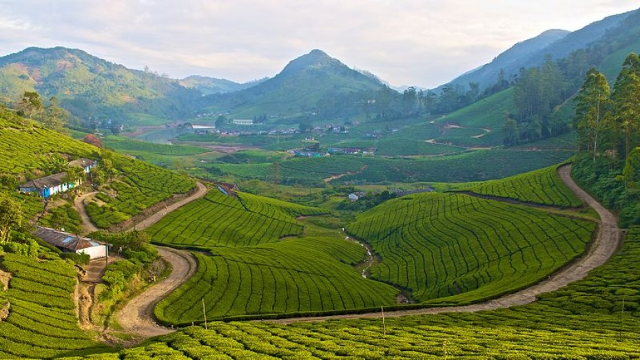
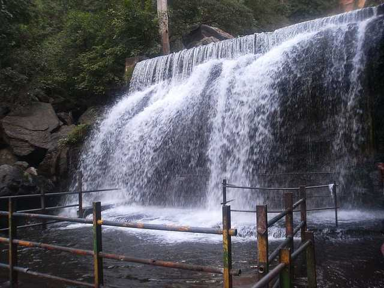
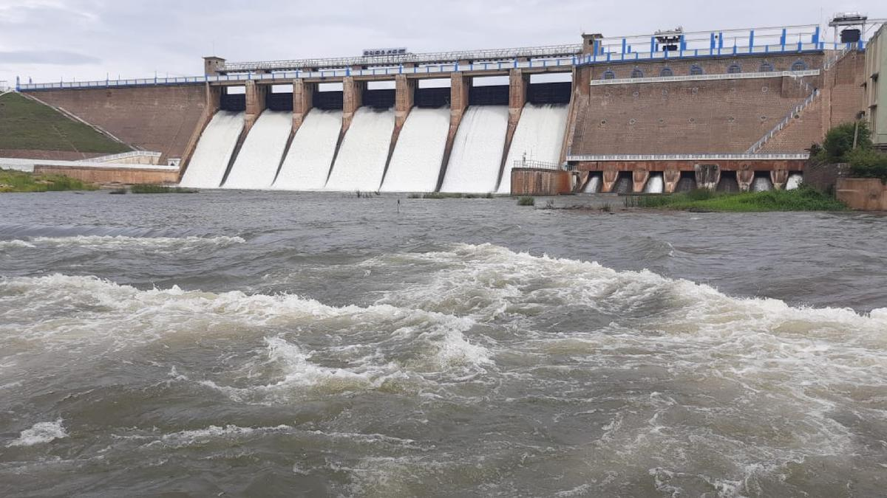
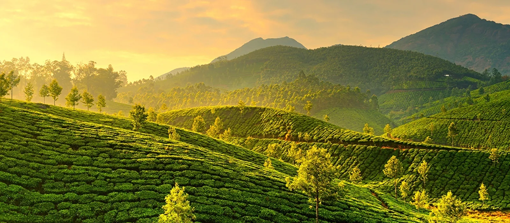
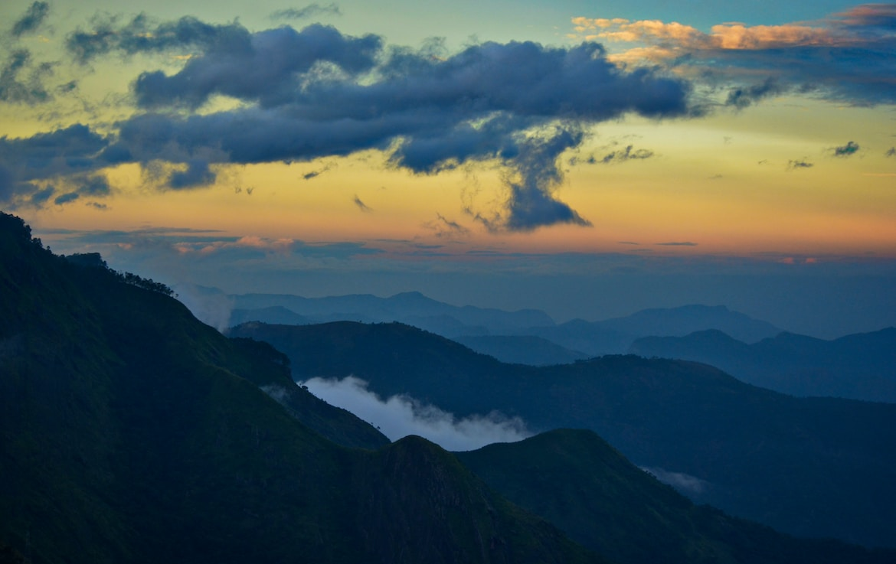

Theni is a valley town situated in the indian states of tamilnadu at the foothills of western ghats
The Theni is called as the "Worlds Hidden Paradise", It is also referd as the "cusion of nature"
It is known for the large scale trading of Cardomom, Grapes, Mango, Garlic, Cotton and Chilli Also
This place is mainly refered for the climatic conditions and the natural scenery of the location
Also it is a good place for tourism which may carry activities like Trecking, Exploring, Cycle Riding,
having a stay in the cusion of nature, experincing wonderful climate, Tasting traditional style foods,
you can also find the range of western ghats near theni in which you are able to see the beauty of the
nature

Megamalai
Megamalai is a wondeful place of tourism, were you can see wonderful ralley of mountain ranges
Megamalai is also called as "PACCHA KUMACHI" which means green peak is at 1500-mts above the
sea level, During the British period this was popularly called as High Wavy Mountain. Since the
peak is covered with clouds always people at the local call it as Megamalai (Megam - clouds,
malai - mountain)

Suruli Falls
Suruli Falls is a two step cascading Water Fall. It is one of the major tourist attractions
in theni districtand draws tourist attractions over tourist from the different parts of the
state particularly during the southwest monsoon. It is an eco-friendly place that is enjoyble
with nature and the comfort climatic conditions, you can also find tasty and traditional food
items which is healthy for the body. The Suruli falls is ritual falls which was considered by
the people for the removal of the bad deeds and sins from the human and gives them mental peace
and relaxations. Also a good tourist spot to spend time with family members and friends in the
cusion of nature.

Vaigai Dam
The Vaigai Dam is built across the Vaigai River near Andipatti, in the Theni district of
Tamil Nadu, southern India.Vaigai Dam measures 111 ft in height and can store water up to
71 ft, with a total storage capacity of 6,143 mcft. Vaigai Dam was inaugurated on 21 January
1959 by Tamil Nadu chief Minister K. Kamaraj. It One of the few dams which is not constructed
in between two mountains so this dam completely depends on its own concrete strength. This dam
is the life line of farmers of the five districts namely Theni, Dindigul, Madurai, Sivagangai
and Ramanathapuram. It provides water for irrigation for the above-mentioned 5 districts as well
as this dam also provides drinking water for major cities such as Theni, Madurai, Ramanathapuram,
etc. which lies along its riverbed.

Munnar
Munnar is a town and hill station in the Idukki district of the southwestern Indian state of Kerala.
Munnar is situated at around 1,600 metres (5,200 ft) above mean sea level, in the Western Ghats
mountain range. Munnar is also called the "Kashmir of South India"The name Munnar is believed to
mean "three rivers",referring to its location at the confluence of the Mudhirapuzha, Nallathanni
and Kundali rivers. The region in and around Munnar varies in height from 1,450 meters (4,760 ft)
to 2,695 meters (8,842 ft) above mean sea level. The temperature ranges between 5 °C (41 °F)and 25 °C
(77 °F) in winter and 15 °C (59 °F) and 25 °C (77 °F) in summer.Temperatures as low as -4 °C (25 °F)
have been recorded in the Sevenmallay region of Munnar.
